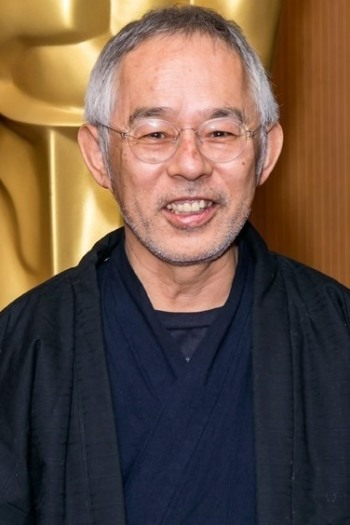

Quienes Somos
Studio Ghibli (スタジオジブリ Sutajio Jiburi?) es un estudio de animación japonés, con sede en Tokio. Fue fundada en 1985 por Hayao Miyazaki y Isao Takahata, y a día de hoy, han realizado más de 20 películas, además de otras clases de trabajos (cortometrajes, anuncios publicitarios, ...). Tienen el respeto del público japonés y también el internacional, donde la crítica y el sector de la animación le presenta muchos respetos. Debido a su popularidad, se abrió el Museo Ghibli, el cual se encuentra a las afueras de Tokio y para el 2022 se espera tener listo el Ghibli Park. El estudio fue resultado del éxito que alcanzó la película de Nausicaä del Valle del Viento, de 1984, dirigida por Hayao Miyazaki para Topcraft y distribuida por Toei Animation. Suzuki fue parte de la producción de esta película. Tras la realización de Mi vecino Totoro, uno de sus personajes, Totoro, pasó a ser el logo de la compañía en 1988. Entre 1999 al 2005, Ghibli fue una subsidiaria de la editorial Tokuma Shoten, la cual publica la revista Animage, lo que permitió estrechar lazos entre ellos, publicando regularmente artículos sobre el estudio o su personal en la sección titulada «Notas Ghibli». Además, frecuentemente ilustraciones sobre sus películas o otros trabajos aparecen como portada de la revista.
Portafolio

Hayao Miyazaki
Es un director de cine de animación, animador, ilustrador, mangaka y productor de anime japonés, de renombre internacional y con una carrera de cinco décadas. Junto con Isao Takahata, fundó Studio Ghibli, un estudio de películas y animación.
Isao Takahata
Fue un director, productor y guionista de películas y series de animación japonesa. Fundó, junto con su amigo Hayao Miyazaki, los estudios Ghibli. Sus obras más reconocidas fueron las series para televisión Heidi (1974) y Marco (1976).

Toshio Suzuki
Es un productor de películas de anime y colega de Hayao Miyazaki, así como expresidente de Studio Ghibli. Es reconocido como uno de los productores más exitosos de Japón tras el enorme éxito de taquilla de las películas de Studio Ghibli.
Premios
Películas
La tumba de las luciérnagas +
Es una película de animación japonesa producida por Studio Ghibli y dirigida por Isao Takahata. Fue la primera película dirigida por Takahata con Studio Ghibli y el tercer largometraje del estudio. Está basada en la historia corta homónima del autor Akiyuki Nosaka publicada en 1967, la cual, a su vez, se basa en las propias experiencias de Nosaka vividas durante la guerra.2 La película está protagonizada por Tsutomu Tatsumi, Ayano Shiraishi, Yoshiko Shinohara y Akemi Yamaguchi. Centrada en la ciudad de Kōbe, Japón, narra la dura historia de dos hermanos, Seita y Setsuko, y de su lucha desesperada por sobrevivir durante los últimos meses de la Segunda Guerra Mundial.
Mi vecino Totoro +
Es una película de animación japonesa de 1988 escrita y dirigida por Hayao Miyazaki y producida por Studio Ghibli. El filme —protagonizado por los actores Noriko Hidaka, Chika Sakamoto y Hitoshi Takagi— cuenta la historia de una familia y sus interacciones con un espíritu del bosque al que llaman "Totoro", en un Japón de la posguerra. Mi vecino Totoro ganó el premio Anime Grand Prix de Animage, el Mainichi Film Award y el Kinema Junpo Award en la categoría de "Mejor película" en 1988. También recibió un premio especial en los Blue Ribbon Awards de ese mismo año. Es el cuarto largometraje realizado por Studio Ghibli, del cual Totoro es su logotipo. Fue elegida por la revista británica Time Out como la mejor película de animación de la historia.
Howl no Ugoku Shiro +
Conocida en España como El castillo ambulante y en Hispanoamérica como El increíble castillo vagabundo, es una película de animación japonesa creada por Studio Ghibli, producida por Toshio Suzuki y dirigida por Hayao Miyazaki, también director de otras afamadas obras del estudio como Nausicaä del Valle del Viento, La princesa Mononoke, Mi vecino Totoro y El viaje de Chihiro. Se basa en la novela homónima de la escritora británica Diana Wynne Jones.
La princesa Mononoke +
Es una película de animación japonesa escrita y dirigida por Hayao Miyazaki, estrenada en 1997.1 Fue producida por Studio Ghibli y distribuida por Tōhō. La princesa Mononoke fue el undécimo largometraje de Studio Ghibli y el sexto dirigido por Miyazaki. La cinta fue estrenada en Japón el 12 de julio de 1997, mientras que en Estados Unidos lo fue dos años más tarde, el 29 de octubre de 1999. Fue un éxito de taquilla casi instantáneo, teniendo a su vez una repercusión mediática excepcional, convirtiéndose así en la película de mayor recaudación en Japón de 1997. El filme también fue la mayor película taquillera de Japón hasta el lanzamiento de Titanic en noviembre de ese año. También ocupó el primer puesto de las películas más taquilleras de la historia de Japón hasta el 2001, cuando se estrenó El viaje de Chihiro, otra película escrita y dirigida por Miyazaki.
Gake no ue no Ponyo +
conocida en España como Ponyo en el acantilado, y en Hispanoamérica como Ponyo y el secreto de la sirenita, a veces llamada simplemente Ponyo, es una película de animación japonesa de 2008 producida por Studio Ghibli,3 escrita y dirigida por Hayao Miyazaki. Se trata de la octava producción dirigida por Miyazaki con Ghibli y la decimoséptima del estudio. Se basa vagamente en el cuento de hadas La sirenita, de Hans Christian Andersen. La cinta cuenta con las voces originales de Tomoko Yamaguchi, Kazushige Nagashima, Yūki Amami, George Tokoro, Yuria Nara, Hiroki Doi, Rumi Hiiragi, Akiko Yano, Kazuko Yoshiyuki y Tomoko Naraoka.
El viaje de Chihiro +
Es una película de animación japonesa de 2001 dirigida por Hayao Miyazaki y producida por Studio Ghibli. Se trata del séptimo largometraje dirigido por Miyazaki dentro del estudio y de la decimosegunda producción de Ghibli. El filme cuenta la historia de una niña de doce años llamada Chihiro, quien durante una mudanza se ve atrapada en un mundo mágico y sobrenatural, teniendo como misión buscar su libertad y la de sus padres, y así poder regresar a su mundo.